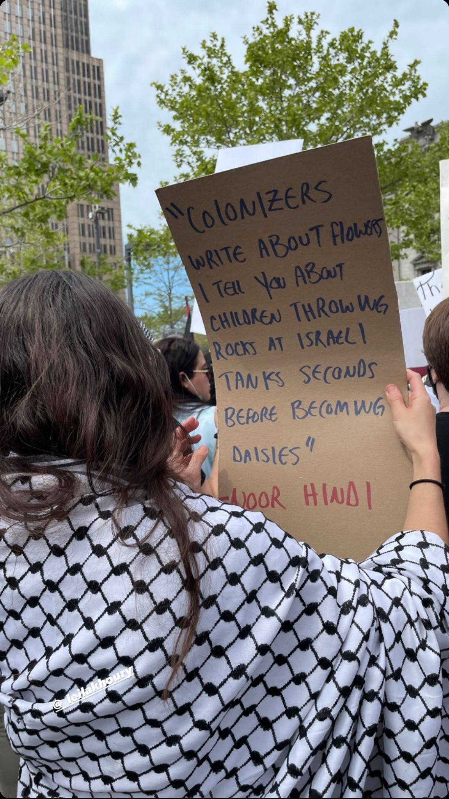

-
2020
Master of Architecture (Emphasis in Interior Architecture) + Certificate in Historic Preservation. School of the Art Institute of Chicago.
-
2015
Bachelor of Fine Arts, Interdisciplinary Sculpture. Maryland Institute College of Art.
-
2021
Co-Author, Among Relatives: Indigenous Voices in the Cuyahoga Valley. Self-published with support from the Conservancy for Cuyahoga Valley National Park (Peninsula, OH.)
-
2021
Author, A Soulful Body: The Immigration and Placemaking of Arabs in Detroit. Published by Empress Editions (Cleveland, OH.)
-
2015
Artist, Nizar Qabbani Memorial Sculpture. Syrian Cultural Garden, Cleveland, OH.
-

Leila Khoury (she/they) is a multidisciplinary artist based in Cleveland, Ohio. Khoury received her BFA in Interdisciplinary Sculpture from the Maryland Institute College of Art and her Master of Architecture and Certificate in Historic Preservation from the School of the Art Institute of Chicago.
Khoury is author to two art books; Among Relatives: Indigenous Voices in the Cuyahoga Valley(2022), and A Soulful Body: The Immigration and Placemaking of Arabs in Detroit, (2020).
Ongoing projects include Cleveland Community Archives, an interactive website and storytelling platform that houses a collection of oral histories documenting Cleveland’s DIY and experimental art spaces, LGBTQIA+ venues, and other non-commercial spaces that have dissipated due to gentrification and other systemic acts of erasure.
Khoury’s work has been featured in solo and group exhibitions in Cleveland and Columbus, OH; New York City and Troy, NY; Chicago, IL; Baltimore, MD; Washington, D.C.; Pittsburgh, PA; Waeukesha, WI; and Subhan, Kuwait. Between June and September 2018, two works by Khoury were featured in the National Museum of Women in the Arts’ exhibition series, Women to Watch.
Contact: info [at] leila-khoury.com
• • •